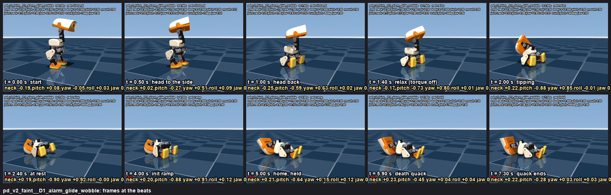
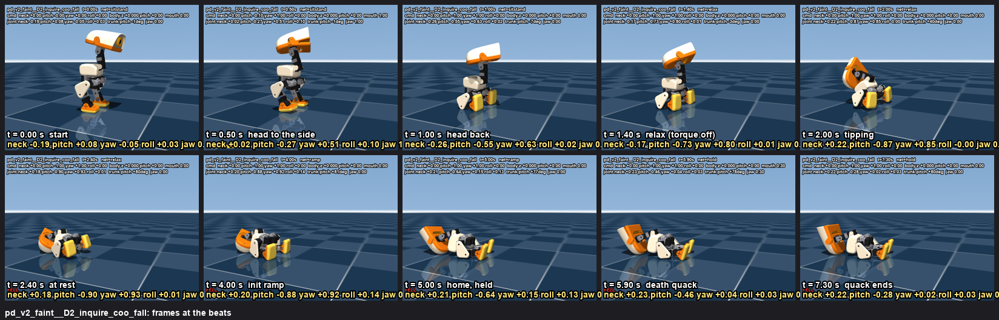
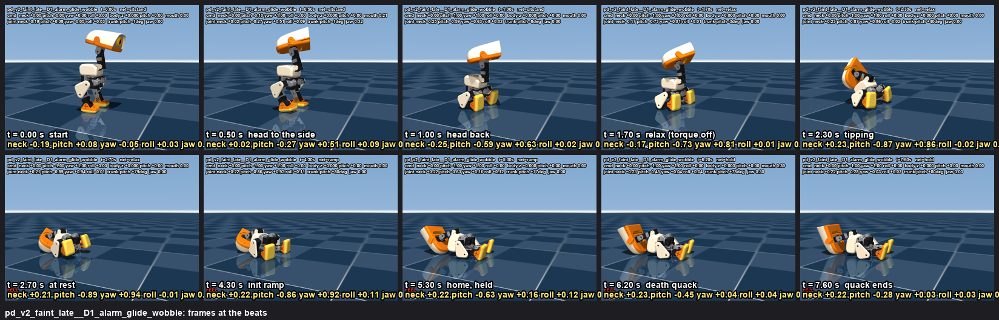
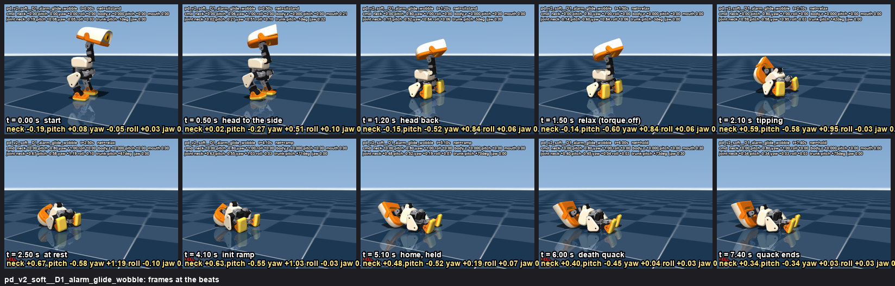
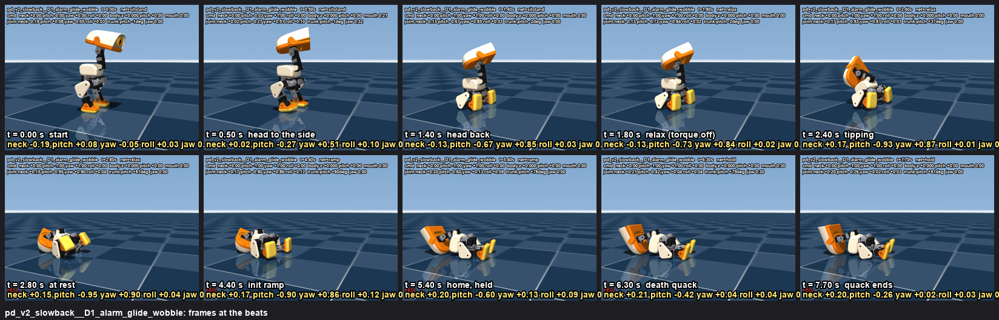

play dead (episode 3): shock, sit, keel over backwards, death quack
v2 (2026-09-06, Rémi's feedback): combination emotion = sit_toggle + a head program + robot.relax (torque off at once) + robot.init once the fall is over (torque on, 2 s ramp to the home pose: the head straightens, the last twitch) + the death quack with the beak open 0.3 (the runtime is being changed so the mouth works while the robot holds after an init). The head turns hard to the side (yaw 1.0) from the press, with the sit, and goes back at once, so the back of the head clears the shoulders (sim: 27 mm gap vs 23 mm with yaw 0.6). Simulation, side camera, 640x480, 30 fps. v1 (soften, head yaw 0.6 late, no torque afterwards) is kept below for comparison. Files: /Users/remi/microduck/notes/emotions/motion/playdead/ (spec.json, playdead.py, pdduck.py, probe.py, REPORT.md), sounds in sounds/playdead/.
Fall probe v2 (probe.py, no video): the head hard to the side from the press, then back; robot.relax; robot.init
Every recipe: sit at t = 0 (the seat lands by ~1 s), yaw 1.0 over 0-0.5 s, the head back (-1.0) over the stated window, then relax at the stated time
(torque off at once). "gap before cut" = closest approach between the head shell and the trunk collision meshes before the torque cut (54 mm at the home pose);
the joints at the cut are what the sit-stand net reached (yaw asked 1.0 -> 0.84). Rows with init: robot.init at that time (2 s ramp to home while
lying on the back): its peak trunk rotation and the joints at the end (the head straight = yaw 0, pitch ~0). ON BACK = the trunk's back on the floor.
| recipe | ends | leaves upright (s) | at rest (s) | peak trunk rot (rad/s) | peak head speed (m/s) | gap before cut (mm) | joints at cut | init: peak trunk rot | joints at end |
|---|
| v2_yaw1_back0.4-1.0_relax1.2 | ON BACK | 1.84 | 2.22 | 7.45 | 0.9 | 28.2 | {'yaw': 0.84, 'pitch': -0.72, 'neck': -0.14} | None | {'yaw': 1.19, 'pitch': -0.96, 'neck': 0.08} |
| v2_yaw1_back0.4-1.0_relax1.4 | ON BACK | 2.04 | 2.4 | 7.03 | 0.9 | 27.4 | {'yaw': 0.84, 'pitch': -0.73, 'neck': -0.14} | None | {'yaw': 1.21, 'pitch': -0.96, 'neck': 0.08} |
| v2_yaw1_back0.4-1.0_relax1.7 | ON BACK | 2.34 | 2.7 | 7.43 | 0.85 | 27.3 | {'yaw': 0.84, 'pitch': -0.73, 'neck': -0.14} | None | {'yaw': 1.2, 'pitch': -0.95, 'neck': 0.08} |
| v2_yaw1_back0.4-1.0_relax2.0 | ON BACK | 2.64 | 3.34 | 7.65 | 0.85 | 27.3 | {'yaw': 0.83, 'pitch': -0.73, 'neck': -0.14} | None | {'yaw': 1.23, 'pitch': -0.91, 'neck': 0.09} |
| v2_yaw1_back0.6-1.4_relax1.8 | ON BACK | 2.48 | 2.82 | 7.66 | 0.89 | 24.4 | {'yaw': 0.85, 'pitch': -0.72, 'neck': -0.08} | None | {'yaw': 1.16, 'pitch': -1.04, 'neck': 0.04} |
| v2_yaw1_back0.6-1.4_relax2.2 | ON BACK | 2.86 | 3.22 | 8.37 | 0.9 | 24.4 | {'yaw': 0.84, 'pitch': -0.73, 'neck': -0.08} | None | {'yaw': 1.21, 'pitch': -1.02, 'neck': 0.05} |
| v2_yaw0.6_back0.4-1.0_relax1.4 | ON BACK | 2.08 | 4.26 | 7.88 | 0.83 | 23.5 | {'yaw': 0.52, 'pitch': -0.75, 'neck': -0.13} | None | {'yaw': 1.16, 'pitch': -1.03, 'neck': 0.05} |
| v2_yaw1_back0.4-1.0_relax0.8 | upright | None | 0.9 | 2.24 | 0.38 | 47.8 | {'yaw': 0.65, 'pitch': -0.21, 'neck': -0.15} | None | {'yaw': 0.65, 'pitch': -0.15, 'neck': -0.07} |
| v2_yaw1_back0.4-1.0_relax1.0 | ON BACK | 1.58 | 2.14 | 8.42 | 0.9 | 36.3 | {'yaw': 0.85, 'pitch': -0.62, 'neck': -0.14} | None | {'yaw': 1.26, 'pitch': -0.92, 'neck': 0.04} |
| v2_yaw1_back0.4-1.2_pitch0.8_relax1.5 | ON BACK | 2.12 | 2.46 | 7.46 | 0.79 | 31.7 | {'yaw': 0.86, 'pitch': -0.6, 'neck': -0.1} | None | {'yaw': 1.27, 'pitch': -0.77, 'neck': 0.38} |
| v2_yaw1_back0.4-1.6_relax1.3 | ON BACK | 1.9 | 2.58 | 7.89 | 0.86 | 35.1 | {'yaw': 0.88, 'pitch': -0.53, 'neck': -0.09} | None | {'yaw': 1.3, 'pitch': -0.81, 'neck': 0.22} |
| v2_yaw1_back0.4-1.0_relax1.4_init3.0 | ON BACK | 2.04 | 4.92 | 7.03 | 0.9 | 27.4 | {'yaw': 0.84, 'pitch': -0.73, 'neck': -0.14} | 0.41 | {'yaw': 0.02, 'pitch': -0.22, 'neck': 0.19} |
| v2_yaw1_back0.4-1.0_relax1.4_init3.5 | ON BACK | 2.04 | 5.42 | 7.03 | 0.9 | 27.4 | {'yaw': 0.84, 'pitch': -0.73, 'neck': -0.14} | 0.39 | {'yaw': 0.02, 'pitch': -0.24, 'neck': 0.19} |
| v2_yaw1_back0.4-1.0_relax1.4_init4.0 | ON BACK | 2.04 | 5.9 | 7.03 | 0.9 | 27.4 | {'yaw': 0.84, 'pitch': -0.73, 'neck': -0.14} | 0.41 | {'yaw': 0.02, 'pitch': -0.28, 'neck': 0.2} |
| v1_2_sit_headback_yaw_soften | ON BACK | 2.98 | 4.28 | 6.61 | 0.82 | 23.2 | {'yaw': 0.48, 'pitch': -0.75, 'neck': -0.11} | None | {'yaw': 1.05, 'pitch': -1.33, 'neck': -0.2} |
Verdict: every v2 recipe lands on the back; relax at 1.4 s (the head just arrived back) is the softest of them (7.0 rad/s, head 0.90 m/s; v1's soften ramp gave
6.6); relax at 0.8 s (head not back yet) does not fall; the -0.8 head-back is a little gentler on the head (0.79 m/s). The init ramp on the lying duck is gentle
(trunk 0.4 rad/s, head 0.03 m/s), no roll, and it straightens the head (yaw 0.02, pitch -0.2). v1 rows (soften, rise, lean) are in REPORT.md.
The v2 pick: pd_v2_faint
v2: alarm + sit at the press while the head turns hard to the side (yaw 1.0 over 0.5 s), the head goes back at once (0.4-1.0 s), robot.relax at 1.4 s: the duck keels over backwards (tips 2.0 s, still by 2.4 s), robot.init at 3.0 s (2 s ramp: the head straightens, the legs fold to home), death quack at 5.5 s with the beak open 0.3
pd_v2_faint + D1_alarm_glide_wobble v2 pick (Rémi's feedback): the head turns hard to the side (yaw 1.0) from the press, with the sit, then goes back at once; robot.relax at 1.4 s (torque off at once, no soften); robot.init 0.6 s after the duck is at rest (2 s ramp to home: the head straightens, the legs fold); then the death quack with the beak open 0.3
motion: v2: alarm + sit at the press while the head turns hard to the side (yaw 1.0 over 0.5 s), the head goes back at once (0.4-1.0 s), robot.relax at 1.4 s: the duck keels over backwards (tips 2.0 s, still by 2.4 s), robot.init at 3.0 s (2 s ramp: the head straightens, the legs fold to home), death quack at 5.5 s with the beak open 0.3
beats: 0.50 s head to the side · 1.00 s head back · 1.40 s relax (torque off) · 2.00 s tipping · 2.40 s at rest · 4.00 s init ramp · 5.00 s home, held · 5.90 s death quack · 7.30 s quack ends
sound: the bank's alarm scream at the press, silence, then a synth death quack 260 -> 120 Hz with a 5 Hz wobble that slows and dies (-6 dB)
measured: FELL at 2.04 s · trunk drift 13.9 cm · trunk pitch -8..+88 deg ·
joints: neck -0.27, head_pitch -0.93..+0.08, |yaw| 1.24, |roll| 0.16 rad ·
jaw at the quacks [1.0, 0.3], between 0.3 · nets sitstand > relax > ramp > hold
beats sheet · keyframes json (with mouth) · silent mp4

pd_v2_faint + D2_inquire_coo_fall
motion: v2: alarm + sit at the press while the head turns hard to the side (yaw 1.0 over 0.5 s), the head goes back at once (0.4-1.0 s), robot.relax at 1.4 s: the duck keels over backwards (tips 2.0 s, still by 2.4 s), robot.init at 3.0 s (2 s ramp: the head straightens, the legs fold to home), death quack at 5.5 s with the beak open 0.3
beats: 0.50 s head to the side · 1.00 s head back · 1.40 s relax (torque off) · 2.00 s tipping · 2.40 s at rest · 4.00 s init ramp · 5.00 s home, held · 5.90 s death quack · 7.30 s quack ends
sound: the bank's inquire shock (as devastated), silence, then the robot's coo voice falling 230 -> 110 Hz with a dying wobble: a breathy last sigh
measured: FELL at 2.04 s · trunk drift 13.9 cm · trunk pitch -7..+89 deg ·
joints: neck -0.26, head_pitch -0.93..+0.08, |yaw| 1.24, |roll| 0.18 rad ·
jaw at the quacks [1.0, 0.3], between 0.89 · nets sitstand > relax > ramp > hold
beats sheet · keyframes json (with mouth) · silent mp4

pd_v2_faint_late (v2 alternative)
v2, a beat of suspense: same head choreography, robot.relax at 1.7 s (the head hangs back for 0.7 s before the cut), init at 3.3 s, death quack at 5.8 s
pd_v2_faint_late + D1_alarm_glide_wobble
motion: v2, a beat of suspense: same head choreography, robot.relax at 1.7 s (the head hangs back for 0.7 s before the cut), init at 3.3 s, death quack at 5.8 s
beats: 0.50 s head to the side · 1.00 s head back · 1.70 s relax (torque off) · 2.30 s tipping · 2.70 s at rest · 4.30 s init ramp · 5.30 s home, held · 6.20 s death quack · 7.60 s quack ends
sound: the bank's alarm scream at the press, silence, then a synth death quack 260 -> 120 Hz with a 5 Hz wobble that slows and dies (-6 dB)
measured: FELL at 2.34 s · trunk drift 13.8 cm · trunk pitch -8..+87 deg ·
joints: neck -0.27, head_pitch -0.92..+0.08, |yaw| 1.21, |roll| 0.14 rad ·
jaw at the quacks [1.0, 0.3], between 0.3 · nets sitstand > relax > ramp > hold
beats sheet · keyframes json (with mouth) · silent mp4

pd_v2_soft (v2 alternative)
v2, softer lever: the head goes back only to -0.8 over 0.8 s, robot.relax at 1.5 s (probe: head 0.79 m/s instead of 0.90), init at 3.1 s, death quack at 5.6 s
pd_v2_soft + D1_alarm_glide_wobble
motion: v2, softer lever: the head goes back only to -0.8 over 0.8 s, robot.relax at 1.5 s (probe: head 0.79 m/s instead of 0.90), init at 3.1 s, death quack at 5.6 s
beats: 0.50 s head to the side · 1.20 s head back · 1.50 s relax (torque off) · 2.10 s tipping · 2.50 s at rest · 4.10 s init ramp · 5.10 s home, held · 6.00 s death quack · 7.40 s quack ends
sound: the bank's alarm scream at the press, silence, then a synth death quack 260 -> 120 Hz with a 5 Hz wobble that slows and dies (-6 dB)
measured: FELL at 2.12 s · trunk drift 13.4 cm · trunk pitch -7..+76 deg ·
joints: neck -0.20, head_pitch -0.72..+0.08, |yaw| 1.27, |roll| 0.14 rad ·
jaw at the quacks [1.0, 0.3], between 0.3 · nets sitstand > relax > ramp > hold
beats sheet · keyframes json (with mouth) · silent mp4

pd_v2_slowback (v2 alternative)
v2, slower: the head turns first, then goes back over 0.8 s (0.6-1.4 s), robot.relax at 1.8 s, init at 3.4 s, death quack at 5.9 s
pd_v2_slowback + D1_alarm_glide_wobble
motion: v2, slower: the head turns first, then goes back over 0.8 s (0.6-1.4 s), robot.relax at 1.8 s, init at 3.4 s, death quack at 5.9 s
beats: 0.50 s head to the side · 1.40 s head back · 1.80 s relax (torque off) · 2.40 s tipping · 2.80 s at rest · 4.40 s init ramp · 5.40 s home, held · 6.30 s death quack · 7.70 s quack ends
sound: the bank's alarm scream at the press, silence, then a synth death quack 260 -> 120 Hz with a 5 Hz wobble that slows and dies (-6 dB)
measured: FELL at 2.46 s · trunk drift 14.1 cm · trunk pitch -6..+90 deg ·
joints: neck -0.19, head_pitch -0.98..+0.08, |yaw| 1.14, |roll| 0.14 rad ·
jaw at the quacks [1.0, 0.3], between 0.3 · nets sitstand > relax > ramp > hold
beats sheet · keyframes json (with mouth) · silent mp4

v1 pick, for comparison: pd_faint
shock (head up, sit at once), the head goes back and to the side over 1 s, soften at 2.2 s: the duck keels over backwards on its own weight as the torque dies (tips ~3.2 s, still by ~4.5 s), death quack at 4.8 s, beak barely open
pd_faint + D1_alarm_glide_wobble v1 pick, for comparison (yaw 0.6 only, late; soften; no torque afterwards)
motion: shock (head up, sit at once), the head goes back and to the side over 1 s, soften at 2.2 s: the duck keels over backwards on its own weight as the torque dies (tips ~3.2 s, still by ~4.5 s), death quack at 4.8 s, beak barely open
beats: 0.55 s shock, seat · 2.00 s head back + side · 2.20 s soften · 3.20 s torque off · 4.50 s at rest · 5.20 s death quack · 6.60 s quack ends
sound: the bank's alarm scream at the press, silence, then a synth death quack 260 -> 120 Hz with a 5 Hz wobble that slows and dies (-6 dB)
measured: FELL at 3.14 s · trunk drift 14.2 cm · trunk pitch -6..+90 deg ·
joints: neck -0.19, head_pitch -1.16..+0.08, |yaw| 1.24, |roll| 0.38 rad ·
jaw at the quacks [1.0, 0.3], between 0.3 · nets sitstand > soften > relax
beats sheet · keyframes json (with mouth) · silent mp4

pd_faint + D2_inquire_coo_fall
motion: shock (head up, sit at once), the head goes back and to the side over 1 s, soften at 2.2 s: the duck keels over backwards on its own weight as the torque dies (tips ~3.2 s, still by ~4.5 s), death quack at 4.8 s, beak barely open
beats: 0.55 s shock, seat · 2.00 s head back + side · 2.20 s soften · 3.20 s torque off · 4.50 s at rest · 5.20 s death quack · 6.60 s quack ends
sound: the bank's inquire shock (as devastated), silence, then the robot's coo voice falling 230 -> 110 Hz with a dying wobble: a breathy last sigh
measured: FELL at 3.14 s · trunk drift 14.3 cm · trunk pitch -5..+90 deg ·
joints: neck -0.20, head_pitch -1.21..+0.09, |yaw| 1.22, |roll| 0.35 rad ·
jaw at the quacks [1.0, 0.3], between 0.89 · nets sitstand > soften > relax
beats sheet · keyframes json (with mouth) · silent mp4

pd_faint + D3_alarm_wheee_tape
motion: shock (head up, sit at once), the head goes back and to the side over 1 s, soften at 2.2 s: the duck keels over backwards on its own weight as the torque dies (tips ~3.2 s, still by ~4.5 s), death quack at 4.8 s, beak barely open
beats: 0.55 s shock, seat · 2.00 s head back + side · 2.20 s soften · 3.20 s torque off · 4.50 s at rest · 5.20 s death quack · 6.60 s quack ends
sound: alarm at the press, silence, then the bank's wheee loop backwards on a slowing tape: a real-timbre fall that dies
measured: FELL at 3.14 s · trunk drift 14.2 cm · trunk pitch -6..+90 deg ·
joints: neck -0.19, head_pitch -1.16..+0.08, |yaw| 1.24, |roll| 0.38 rad ·
jaw at the quacks [1.0, 0.3], between 0.3 · nets sitstand > soften > relax
beats sheet · keyframes json (with mouth) · silent mp4

pd_faint_slow (v1 alternative)
same faint, slower: the head goes back over 1.5 s, soften at 2.8 s, more silence, death quack at 5.6 s
pd_faint_slow + D1_alarm_glide_wobble
motion: same faint, slower: the head goes back over 1.5 s, soften at 2.8 s, more silence, death quack at 5.6 s
beats: 0.55 s shock, seat · 2.50 s head back + side · 2.80 s soften · 3.80 s torque off · 5.10 s at rest · 6.00 s death quack · 7.60 s quack ends
sound: the bank's alarm scream at the press, silence, then a synth death quack 260 -> 120 Hz with a 5 Hz wobble that slows and dies (-6 dB)
measured: FELL at 3.76 s · trunk drift 14.3 cm · trunk pitch -6..+90 deg ·
joints: neck -0.20, head_pitch -1.23..+0.08, |yaw| 1.25, |roll| 0.37 rad ·
jaw at the quacks [1.0, 0.3], between 0.3 · nets sitstand > soften > relax
beats sheet · keyframes json (with mouth) · silent mp4

pd_faint_slow + D2_inquire_coo_fall
motion: same faint, slower: the head goes back over 1.5 s, soften at 2.8 s, more silence, death quack at 5.6 s
beats: 0.55 s shock, seat · 2.50 s head back + side · 2.80 s soften · 3.80 s torque off · 5.10 s at rest · 6.00 s death quack · 7.60 s quack ends
sound: the bank's inquire shock (as devastated), silence, then the robot's coo voice falling 230 -> 110 Hz with a dying wobble: a breathy last sigh
measured: FELL at 3.76 s · trunk drift 14.3 cm · trunk pitch -5..+90 deg ·
joints: neck -0.20, head_pitch -1.21..+0.09, |yaw| 1.25, |roll| 0.38 rad ·
jaw at the quacks [1.0, 0.3], between 0.89 · nets sitstand > soften > relax
beats sheet · keyframes json (with mouth) · silent mp4

pd_lean (v1 alternative)
shock + sit, a body-pose lean back (-0.3, seated: the net moves the neck back) with the head to the side, soften at 2.4 s; the duck tips over ~1.3 s after the torque is gone (probe: the softest fall, but a marginal balance)
pd_lean + D1_alarm_glide_wobble
motion: shock + sit, a body-pose lean back (-0.3, seated: the net moves the neck back) with the head to the side, soften at 2.4 s; the duck tips over ~1.3 s after the torque is gone (probe: the softest fall, but a marginal balance)
beats: 0.55 s shock, seat · 2.00 s lean back · 2.40 s soften · 3.40 s torque off · 4.40 s at rest · 5.40 s death quack · 6.80 s quack ends
sound: the bank's alarm scream at the press, silence, then a synth death quack 260 -> 120 Hz with a 5 Hz wobble that slows and dies (-6 dB)
measured: FELL at 3.56 s · trunk drift 12.7 cm · trunk pitch -6..+69 deg ·
joints: neck -0.19, head_pitch -0.55..+0.08, |yaw| 0.40, |roll| 0.07 rad ·
jaw at the quacks [1.0, 0.3], between 0.3 · nets sitstand > soften > relax
beats sheet · keyframes json (with mouth) · silent mp4

pd_legs (v1 alternative)
shock + sit, head to the side, then the sit-stand RISE for 0.4 s (the legs straighten) and soften: the duck goes over backwards from its heels (the brief's idea; the fastest fall in the probe)
pd_legs + D1_alarm_glide_wobble
motion: shock + sit, head to the side, then the sit-stand RISE for 0.4 s (the legs straighten) and soften: the duck goes over backwards from its heels (the brief's idea; the fastest fall in the probe)
beats: 0.55 s shock, seat · 2.20 s legs straighten · 2.40 s soften · 3.40 s torque off · 3.40 s at rest · 4.60 s death quack · 6.00 s quack ends
sound: the bank's alarm scream at the press, silence, then a synth death quack 260 -> 120 Hz with a 5 Hz wobble that slows and dies (-6 dB)
measured: FELL at 2.80 s · trunk drift 18.2 cm · trunk pitch -6..+99 deg ·
joints: neck -0.25, head_pitch -0.35..+0.29, |yaw| 1.25, |roll| 0.13 rad ·
jaw at the quacks [1.0, 0.3], between 0.3 · nets sitstand > soften > relax
beats sheet · keyframes json (with mouth) · silent mp4

{kind=link}
{kind=link}
{kind=link}
{kind=link}
{kind=link}